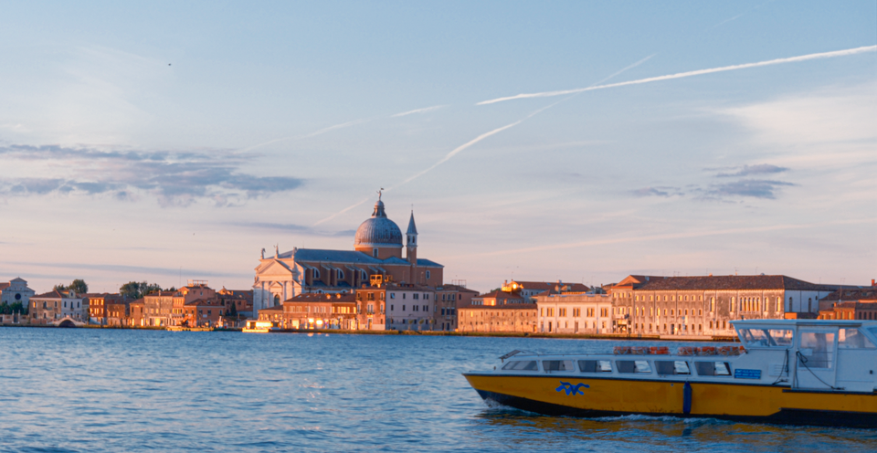
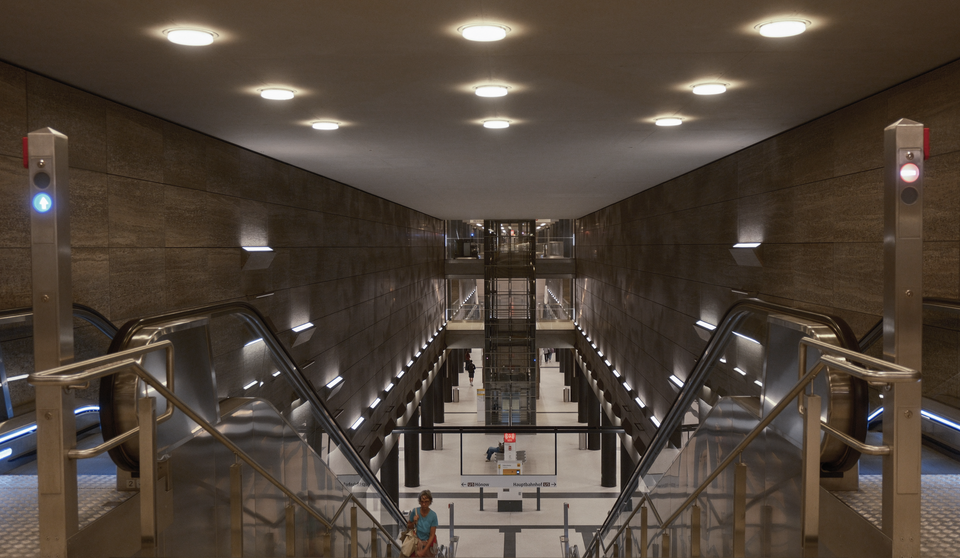
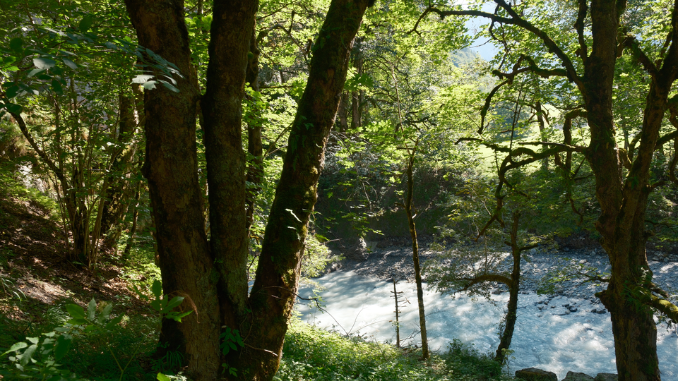

05 / PHOTOGRAPHY ARCHIVE
Fragments
in Transit
A visual notebook about architecture, movement, weather, and the quiet details between destinations.
- PHOTOGRAPHS
- 43
- PLACES
- 05
- PHOTOGRAPHER
- HUI YAO



INDEX / 001–043
The Photo Archive
Choose a place, then open any frame to view it in full.
Loading photographs…